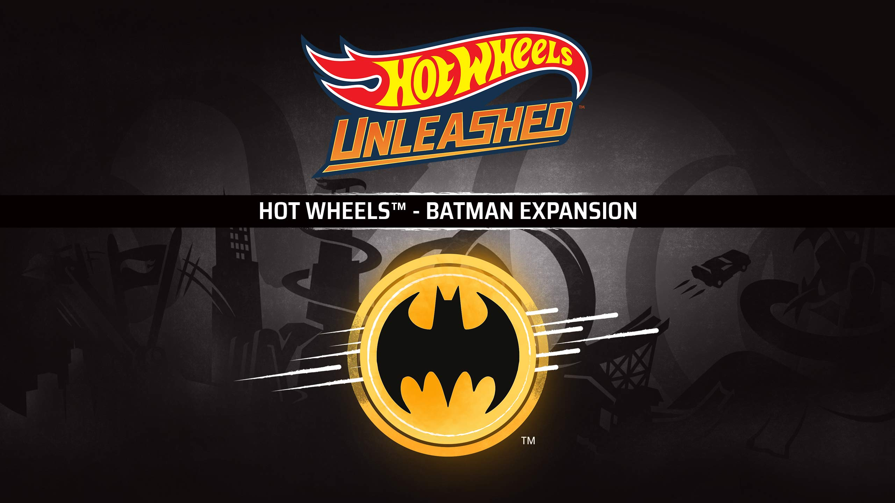

Cultura Pop
La cultura pop abarca un amplio especto de expresiones artísticas y entretenimiento que reflejan las tendencias, valores y
preocupaciones de la sociedad contemporánea.
Incluye música, cine, televisión, arte, moda, literatura, cómics, videojuegos y más.
Cambiar Imagen con Estilos CSS

Cambiar Imagen con Estilos CSS
Batman en la cultura pop ha sido un icono importante gracias a su aspecto que lo hace destacar y ser diferente, al pasar de los años su personaje,
va evolucionando, apareciendo tambien en peliculas, comics, videojuegos, entre otros. En este caso se ve representado en diversos carros Hot Wheels
que tienen diversos detalles de aquel personaje.